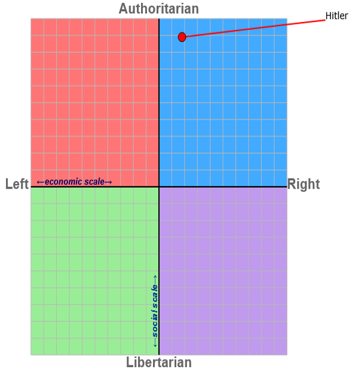
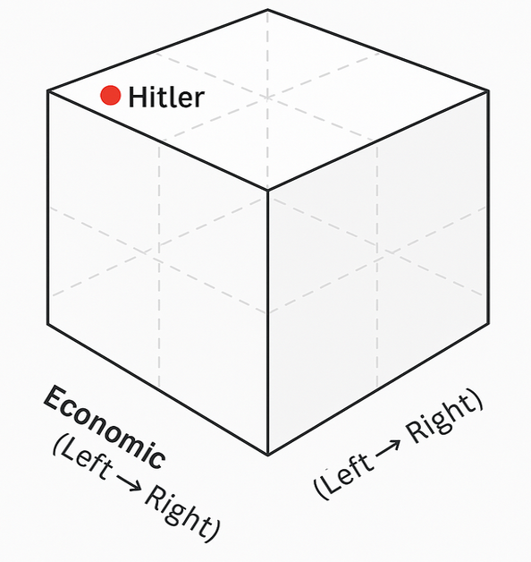

Civic Cube Political Compass
This test was created to map political ideology using a three-dimensional model and accurate ideology interpretations, offering a deeper and more nuanced view than traditional left-right or authoritarian-libertarian charts. Due to the nature of 3D modeling, references to 'up' and 'down' become difficult, so take them as general guides and examine the results carefully. Your answers will place you along three axes:
- Economic (X-axis): Left (Socialist) ↔ Right (Capitalist)
- Authority (Y-axis): Down (Reformist) ↔ Up (Traditionalist)
- Adherence (Z-axis): Forward (Relativistic) ↔ Back (Principled)
The original Political Compass – while widely used – suffers from oversimplification and misinformed framing. It reduces complex ideological tendencies to two axes without accounting for depth of belief or moral foundations. For instance, moral absolutism vs relativism is a meaningful third axis that is entirely absent. Additionally, the original test tends to reflect contemporary Western political narratives and may misplace certain ideologies when viewed historically or cross-culturally. For example, Adolf Hitler is frequently placed on the far-right of the traditional 2D compass, yet his regime combined economically socialist policies, extreme nationalism, and moral absolutism rooted in a dogmatic worldview – making him more accurately categorized as a realist socialist: authoritarian, principled, and socialist.
Traditional 2D Compass
Position: Far-Right, Authoritarian
Often shown at the top-right of the grid.

Reinterpreted Civic Cube
Position: Authoritarian, Realist Socialist
Located in the back-top-left quadrant.

This visual comparison illustrates how ideological misclassification can occur when compressed into two dimensions. While the traditional chart places Hitler in the far-right authoritarian quadrant due to a multitude of misinformed factors, it primarily neglects the doctrinaire moralism and centralized collectivism that more accurately define realist socialism in this 3D model. This is not to sanitize or relativize, but to emphasize ideological structure over modern semantic bias.
Answer each question honestly. There are no right or wrong responses – only insights.